Chapter 8: Applications, Frontiers, Careers & Learning¶
This final chapter steps back from the circuits to ask where quantum machine learning could matter and what the evidence really says in late 2026. It surveys chemistry, drug discovery, finance and science applications with honest status labels, the benchmarking and simulability results that reshaped the field, machine learning for building quantum computers, and quantum-inspired methods already used in industry. It then maps the companies, research groups and conferences, and gives you careers, skills, courses, a reading list, interview practice and a 12-month study plan.
8.1 Where QML Might Matter: An Honest Map of Applications¶
People have tried quantum machine learning on chemistry, medicines, finance, particle physics, images, text, anomaly detection and satellite data. As of 2026 almost all of this is research and proof-of-concept work: no QML model has shown a clear, repeatable practical advantage over the best classical methods on real-world data. The most promising area is learning from data that is itself quantum.
Promise versus evidence (late 2026)
| Why people hope | Evidence so far | |
|---|---|---|
| Learning from quantum data | provable sample advantages | experiments on Sycamore (2022) |
| Chemistry & materials | quantum-native problems | small hybrid demos |
| Drug discovery | richer generative priors | one 2025 KRAS study |
| Finance | kernels, sampling, pricing | PoCs; HSBC 2025 claim |
| Images & text | new inductive biases | toy-scale; classical wins |
| HEP & Earth observation | huge datasets | comparable, not better |
| Anomaly detection | quantum kernels | small studies only |
Every row is still research; the right column is what has actually been shown.
Think of it like…
QML applications today are like early aeroplane prototypes at a fair: some hop, some glide, a few look genuinely promising, but nobody is selling airline tickets yet.
Real-world example
Helena, an innovation lead at the fictional Northgate Group, receives six QML proposals. She scores each on three questions: is the data quantum or classical, is there a strong classical baseline, and does it need fault-tolerant hardware? Only a sensor-data project and a chemistry collaboration pass, and both are funded as two-year research.
How it works¶
- Ask what kind of data it is: quantum data (from experiments, sensors, simulations) has the strongest theoretical case.
- Check the classical state of the art: gradient boosting, deep learning and tensor networks are formidable.
- Ask whether the method needs fault-tolerant hardware (amplitude estimation, HHL-style algorithms) or runs on NISQ devices.
- Look for published, peer-reviewed evidence with fair baselines rather than press releases.
- Estimate data-loading and shot costs before believing any speed-up.
Who uses it
Innovation managers, consultants, quantum application scientists and investors use this kind of map; interviewers expect candidates to give balanced answers.
Key takeaway
A safe, accurate one-liner: 'There is no demonstrated practical QML advantage on classical data yet; the best-founded advantages are for learning from quantum data, and many proposals need fault-tolerant machines.'
Going deeper
- Huang et al. (Science, 2022) showed exponentially fewer experiments are needed for some learning tasks when quantum data is processed coherently, using up to 40 qubits — the clearest experimental QML advantage, for quantum data.
- For classical data, the large 2024 benchmark by Bowles, Ahmed and Schuld found out-of-the-box classical models generally outperformed 12 popular QML models on small tasks.
- Many headline finance and chemistry algorithms (amplitude estimation, phase estimation) need fault-tolerant machines with thousands of logical qubits; resource estimates place useful derivative pricing well beyond today's hardware.
- Data loading is a hidden tax: encoding millions of classical records on a QPU needs many shots and circuits, erasing theoretical speed-ups unless data is small or already quantum.
- Industry studies are mostly proofs of concept with banks, pharma and car makers; treat percentage improvements in press releases as starting points for questions, not conclusions.
Common mistakes & misconceptions
- Assuming a quantum model 'wins' because it reaches high accuracy; ask what a tuned classical model achieves on the same split.
- Treating every application as near-term; check whether the algorithm requires error-corrected hardware.
- Dismissing QML entirely: learning from quantum data and ML for quantum hardware are active, well-founded areas.
Key algorithms, circuits, techniques, tools & papers¶
| Name | What it does | Example |
|---|---|---|
| Quantum-sensor and experiment data applications Huang et al., Science 2022; Google Quantum AI and Caltech · Concept · Research · Intermediate |
Application area where QML processes states from experiments or sensors directly — the area with provable advantages. | A quantum memory stores copies of a sensor's state so properties are learned from far fewer experiments. |
| Chemistry and materials Academic and industry labs · Concept · Research · Intermediate |
Predicting molecular and material properties with quantum or hybrid models on inherently quantum problems. | A hybrid model predicts reaction energies from small VQE runs plus a classical regressor. |
| Drug discovery Pharma and quantum start-ups · Concept · Research · Intermediate |
Hybrid generative and predictive models for designing and screening candidate molecules. | A 2025 KRAS study used a 16-qubit circuit Born machine inside a generative pipeline. |
| Finance Banks and quantum vendors · Concept · Research · Intermediate |
Classification (fraud, credit), forecasting, pricing and portfolio tasks explored with quantum methods. | HSBC and IBM reported in 2025 a hybrid model improving bond-trade fill-probability prediction. |
| High-energy physics data CERN QTI and collaborators · Concept · Research · Intermediate |
Classifying collision events, reconstructing tracks and detecting anomalies with quantum models. | A quantum SVM separates Higgs-signal events from background on a reduced feature set. |
| Image and text classification Academic demos · Concept · Research · Beginner |
Classifying downscaled images or short sentences with hybrid or fully quantum models. | A 4-qubit hybrid network classifies two classes of PCA-reduced digits. |
| Anomaly detection Academic and industry studies · Concept · Research · Intermediate |
Finding unusual records with quantum kernels, quantum autoencoders or one-class models. | A quantum one-class SVM flags suspicious network flows in a 500-sample test. |
| Earth observation ESA Φ-lab, DLR and academic groups · Concept · Research · Intermediate |
Classifying satellite images or spectral data with hybrid quantum-classical models. | A hybrid model labels land-cover patches using a few principal components per patch. |
| Generative modelling and synthetic data Academic and industry labs · Concept · Research · Intermediate |
Quantum circuit Born machines and QGANs generating samples such as molecules or market scenarios. | A QCBM provides a prior distribution for a classical molecule generator. |
| ML-heavy optimisation See the optimisation chapter · Concept · Research · Intermediate |
Feature selection, clustering and training binary models posed as QUBOs for annealers or QAOA. | A bank tests annealing-based feature selection for a credit model. |
| Proof of concept (PoC) Industry practice · Concept · Current · Beginner |
A short, limited experiment showing technical feasibility, not business value or advantage. | Helena funds a three-month PoC with a clear exit criterion: beat a tuned XGBoost model. |
| Technology readiness level (TRL) NASA / EU Horizon scale 1-9 · Metric · Current · Beginner |
A 1-9 scale of maturity from basic principles (1) to proven operational system (9). | Most QML applications sit around TRL 2-4: concept formulated or validated in the lab. |
| Quantum utility vs quantum advantage IBM and community usage · Concept · Current · Intermediate |
Utility: useful results beyond brute-force simulation; advantage: outperforming the best classical methods. | A study can show utility-scale circuits without proving any learning advantage. |
8.2 Chemistry, Materials and Drug Discovery¶
Molecules obey quantum mechanics, so chemistry is the most natural home for quantum computers. In QML terms, researchers use quantum circuits as feature extractors, generative priors or property predictors, often combined with classical deep learning. The practical results so far are small demonstrations; the big prize — accurate simulation of hard molecules — probably needs fault-tolerant machines.
Think of it like…
Using quantum computers for chemistry is like using a scale model of a bridge to test the real bridge: the model obeys the same physics, so it can capture effects a drawing cannot — once it is built large and precise enough.
Real-world example
Dr Okafor's team at the fictional Riverside Therapeutics copies a published hybrid pipeline: a classical LSTM generates candidate molecules, a 16-qubit circuit Born machine supplies a learned prior, and a filtering platform scores drug-likeness. Of 1 million generated molecules they shortlist 40 for docking, but they also run the classical-only pipeline as a control.
How it works¶
- Compute or collect molecular data: classical descriptors, quantum chemistry energies or Hamiltonians.
- Choose the quantum role: generative prior (QCBM), kernel or QNN predictor, or VQE-derived features.
- Train in a hybrid loop with a classical model doing most of the work.
- Filter candidates with classical chemistry tools (docking, DFT, ADMET predictors).
- Compare against the same pipeline without the quantum component and validate in the lab.
Who uses it
Computational chemists, cheminformatics scientists, quantum application scientists at pharma companies and start-ups such as QC Ware and Insilico Medicine work here.
Key takeaway
Mention the 2025 Nature Biotechnology KRAS study as an honest example: a quantum-enhanced generative pipeline produced experimentally tested hits, but the authors did not claim the molecules beat classical methods.
Going deeper
- Ghazi Vakili et al. (Nature Biotechnology, 2025) expanded about 650 known KRAS inhibitors to over a million training molecules, combined a 16-qubit QCBM on IBM hardware with an LSTM, and synthesised 15 compounds.
- Insilico's CEO stated that the results stop short of showing the quantum-designed molecules beat classically identified ones — a good model for careful claims.
- QC Ware's Promethium platform runs GPU-accelerated density functional theory; in 2026 the company reported hybrid demonstrations with IBM's 156-qubit Heron (August) and IonQ Forte via Amazon Braket (September), described as technology demonstrations.
- Microsoft and Pacific Northwest National Laboratory screened about 32 million candidate battery materials in 2024 using AI and HPC — not quantum hardware — a reminder that classical AI is the main competitor.
- Fault-tolerant quantum phase estimation for strongly correlated molecules (e.g. FeMoco, cytochrome P450) is the long-term target; resource estimates require thousands of logical qubits.
- Learning from quantum data in chemistry includes Hamiltonian learning from NMR-style experiments; Google's 2025 'Quantum Echoes' work used OTOC measurements on Willow as a 'molecular ruler' proposal.
Common mistakes & misconceptions
- Crediting the quantum component for a hit without an ablation that removes it.
- Comparing a hybrid model with an outdated classical baseline instead of modern graph neural networks or ML force fields.
- Assuming near-term VQE will beat DFT or coupled-cluster methods for drug-sized molecules.
Key algorithms, circuits, techniques, tools & papers¶
| Name | What it does | Example |
|---|---|---|
| Quantum-enhanced KRAS inhibitor study Ghazi Vakili et al. (Insilico, U. Toronto), Nature Biotechnology 2025 · Paper · Research · Intermediate |
Hybrid QCBM-LSTM generative pipeline that produced experimentally tested KRAS inhibitor candidates. | 15 compounds were synthesised from the pipeline's shortlist and tested in assays. |
| Circuit Born machine as generative prior QML research (QCBM) · Technique · Research · Advanced |
Uses samples from a trained quantum circuit as the prior or noise source for a classical generator. | Riverside's QCBM supplies 16-bit latent samples that seed the LSTM's molecule strings. |
| Molecular property prediction with QNNs Academic studies · Technique · Research · Intermediate |
Hybrid networks predicting properties such as solubility or toxicity from molecular descriptors. | A 6-qubit QNN predicts solubility class from 6 PCA descriptors, matching but not beating random forests. |
| Quantum kernels for molecules Academic studies · Technique · Research · Advanced |
Fidelity or projected quantum kernels applied to molecular fingerprints or quantum-chemistry features. | A projected kernel on 8 qubits classifies active versus inactive compounds in a small screen. |
| VQE-derived features Hybrid quantum chemistry · Technique · Research · Advanced |
Using energies or reduced density matrices from small VQE runs as inputs to classical ML. | Active-space energies from 4-qubit VQE runs are added as features to a property model. |
| Hamiltonian learning Quantum physics and QML research · Technique · Research · Advanced |
Inferring a system's Hamiltonian parameters from measurements, a natural learning-from-quantum-data task. | A team fits coupling constants of a spin system from NMR-like time-series data. |
| Insilico Medicine AI drug-discovery company · Organisation · Current · Beginner |
AI-driven drug-discovery company whose Chemistry42 platform was central to the 2025 quantum-enhanced KRAS study. | Its generative chemistry tools scored candidate molecules from the hybrid pipeline. |
| QC Ware Promethium QC Ware · Tool · Current · Intermediate |
SaaS platform for GPU-accelerated quantum chemistry (DFT), with 2026 hybrid quantum demonstrations. | A materials team runs DFT on a thousand-atom system in Promethium as a classical baseline. |
| Quantinuum InQuanto Quantinuum · Tool · Current · Advanced |
Computational chemistry platform for designing and running quantum chemistry experiments on Quantinuum hardware and emulators. | A chemist prepares an active-space Hamiltonian and runs a variational experiment through InQuanto. |
| Microsoft-PNNL battery material screen Microsoft Azure Quantum Elements & PNNL, 2024 · Paper · Current · Intermediate |
AI- and HPC-driven screening of about 32 million candidates for battery electrolytes — classical, not quantum. | Cited in strategy meetings to show how strong classical AI already is. |
| ML force fields and graph neural networks Classical chemistry ML (e.g. SchNet, MACE) · Model · Current · Intermediate |
Classical deep-learning models predicting energies and forces; the baseline any quantum chemistry ML must beat. | A MACE potential predicts molecular dynamics energies within chemical accuracy for a test set. |
| Fault-tolerant chemistry (QPE) Quantum algorithms research · Algorithm · Research · Advanced |
Phase estimation for ground-state energies of strongly correlated molecules; needs error-corrected machines. | Resource estimates for FeMoco require millions of physical qubits with current error rates. |
| Density functional theory (DFT) Classical quantum chemistry · Concept · Current · Intermediate |
Workhorse classical method approximating electronic structure; fast but inaccurate for strongly correlated systems. | Riverside screens 10,000 molecules with DFT before considering any quantum computation. |
8.3 Finance: Fraud, Pricing, Portfolios and Trading¶
Banks were among the first big QML experimenters because small improvements in prediction or pricing can be worth a lot. Near-term work uses quantum kernels and QNNs for classification and forecasting; longer-term hopes rest on fault-tolerant algorithms such as amplitude estimation for pricing and risk. Strict rules on explainability and latency also shape what is realistic.
Two horizons for quantum finance
| Near-term (NISQ) QML | Fault-tolerant algorithms | |
|---|---|---|
| Typical tasks | fraud, credit, fill prediction | derivative pricing, VaR |
| Methods | kernels, QNNs, QCBMs | amplitude estimation |
| Claimed gain | better features, priors | quadratic sampling speed-up |
| Hardware need | tens to ~150 qubits | thousands of logical qubits |
| Status 2026 | PoCs, mixed results | resource estimates only |
Most headline speed-ups belong to the right-hand column.
Think of it like…
For a bank, a QML model is like a promising new trader on probation: interesting ideas, but every decision is checked against the experienced desk before real money is involved.
Real-world example
Marcus, a quant at the fictional Albion Bank, tests a quantum kernel for card-fraud detection on 2,000 labelled transactions reduced to 8 features. It reaches 0.91 AUC; a tuned LightGBM model on all 30 features reaches 0.97 and runs in microseconds. The bank keeps LightGBM and funds a small study on quantum generative models for stress scenarios instead.
How it works¶
- Pick a task with clean labels and a measurable business metric (AUC, fill rate, pricing error).
- Build the best classical model first, usually gradient-boosted trees for tabular data.
- Reduce features to fit qubit budgets and train the quantum model with identical splits.
- Check latency, explainability and model-risk requirements, not only accuracy.
- Separate near-term experiments from fault-tolerant roadmaps (amplitude estimation for pricing and risk).
Who uses it
Quant researchers, bank innovation teams, model-risk validators and quantum vendors' finance specialists work on these problems.
Key takeaway
Quote the HSBC-IBM study precisely: up to 34% improvement in predicting bond-trade fill probability versus common techniques, on Heron processors, in a non-live trial — and note the authors did not claim quantum advantage.
Going deeper
- HSBC and IBM (September 2025) used multiple IBM Heron processors with production-scale European corporate bond data; they reported up to 34% improvement in fill-probability prediction and noted hardware noise may have contributed to the effect.
- Chakrabarti et al. (Quantum, 2021; Goldman Sachs with IBM) estimated that useful quantum advantage in derivative pricing via amplitude estimation needs about 7,500 logical qubits — far beyond 2026 machines.
- Quantum amplitude estimation offers a quadratic speed-up over Monte Carlo sampling (error ~1/N instead of 1/sqrt(N)), but the 'quadratic is not enough' argument (Babbush et al. 2021) warns error-correction overheads can cancel it.
- Tabular financial data is the home turf of gradient-boosted trees (XGBoost, LightGBM, CatBoost), which are hard to beat even for classical deep learning.
- Model-risk rules such as the US Federal Reserve's SR 11-7 guidance require validation, documentation and explainability — a hurdle for any opaque quantum model.
- Trading latency is measured in microseconds to milliseconds, while cloud QPU calls take seconds to hours, so near-term quantum models are more realistic for offline analytics than live decisions.
Common mistakes & misconceptions
- Comparing a quantum model on 8 PCA features with a classical model also restricted to 8 features, while the bank's real model uses 300.
- Quoting percentage improvements without the baseline, dataset size and confidence intervals.
- Assuming amplitude-estimation speed-ups are available on today's NISQ hardware; they need error-corrected machines.
Key algorithms, circuits, techniques, tools & papers¶
| Name | What it does | Example |
|---|---|---|
| HSBC-IBM bond trading trial HSBC & IBM, September 2025 · Paper · Research · Intermediate |
Hybrid model on IBM Heron processors improved prediction of bond-trade fill probability by up to 34% in a non-live trial. | Cited as the most prominent 2025 finance QML result, with caveats about noise and no advantage claim. |
| Quantum amplitude estimation for pricing Brassard et al. 2002; Rebentrost et al. 2018; Stamatopoulos et al. 2020 · Algorithm · Research · Advanced |
Estimates expected payoffs with quadratically fewer samples than Monte Carlo on fault-tolerant hardware. | Pricing an option to 0.1% error needs ~1,000 quantum queries versus ~1,000,000 classical samples, before overheads. |
| Derivative-pricing resource estimate Chakrabarti et al., Quantum 2021 (Goldman Sachs, IBM) · Paper · Research · Advanced |
Estimated about 7,500 logical qubits needed for quantum advantage in pricing complex derivatives. | Used by Albion Bank to set realistic timelines for its quantum roadmap. |
| Fraud detection with quantum kernels Bank and vendor PoCs · Technique · Research · Intermediate |
Classifying transactions as fraudulent or genuine with quantum kernels or QNNs on reduced features. | Marcus's 8-qubit kernel reaches 0.91 AUC versus 0.97 for LightGBM. |
| Credit scoring and risk classification Bank PoCs · Technique · Research · Intermediate |
Predicting default risk with hybrid models, constrained by fairness and explainability rules. | A quantum model's predictions are compared with a scorecard regulators already accept. |
| Synthetic market scenarios QCBM / QGAN research · Technique · Research · Advanced |
Quantum generative models produce scenarios of correlated asset moves for stress testing. | A 12-qubit QCBM learns the joint distribution of discretised returns for four assets. |
| Portfolio optimisation QUBO / QAOA research (see optimisation chapter) · Algorithm · Research · Intermediate |
Selecting assets to balance return and risk, posed as a quadratic optimisation problem. | A 20-asset selection is solved by an annealer and compared with Gurobi. |
| Gradient-boosted trees XGBoost, LightGBM, CatBoost · Model · Current · Beginner |
Classical ensembles of decision trees that dominate tabular-data tasks in finance. | LightGBM on 30 features remains Albion Bank's production fraud model. |
| Model risk management (SR 11-7) US Federal Reserve / OCC guidance, 2011 · Concept · Current · Intermediate |
Supervisory guidance requiring validation, documentation and governance for models used by banks. | A quantum model must pass the same independent validation as any classical model. |
| Latency constraint Trading systems engineering · Concept · Current · Beginner |
Live trading decisions need microsecond-to-millisecond responses; cloud QPU calls are far slower. | The HSBC-style model would feed offline analytics, not the live quoting engine. |
| JPMorgan Chase quantum research JPMorgan Chase Global Technology Applied Research · Organisation · Current · Intermediate |
One of the largest in-house bank quantum teams, publishing on algorithms, optimisation and certified randomness. | Its 2025 certified-randomness experiment with Quantinuum appeared in Nature. |
| Quadratic speed-up caveat Babbush et al., PRX Quantum 2021 · Concept · Current · Advanced |
Error-correction overheads can erase quadratic speed-ups unless problems are very large. | A Monte Carlo task taking minutes classically gains nothing from a quadratic quantum speed-up. |
8.4 Science Data and Classic Demos: Physics, Earth Observation, Images, Text and Anomalies¶
Big-science labs such as CERN have tested QML on particle-collision data, space agencies on satellite images, and many tutorials on handwritten digits and short sentences. These demos are valuable for learning, but most use heavily reduced data and match — rather than beat — good classical models.
Think of it like…
Classic QML demos are like a chess engine solving puzzles from a beginner's book: it shows the engine works, but tells you little about how it would do against a grandmaster.
Real-world example
Tomás at the fictional Andes Observatory classifies cloud cover in satellite images. He reduces each 64x64 patch to 8 principal components, angle-encodes them on 8 qubits and trains a QNN: 89% accuracy. A small CNN on full patches gets 97%; a logistic regression on the same 8 components gets 88%. His report concludes the PCA step, not the quantum layer, set the ceiling.
How it works¶
- Reduce the raw data (pixels, detector hits, words) to a handful of features that fit qubit budgets.
- Encode features and train a quantum or hybrid model.
- Train classical models on both the reduced and the full data.
- Compare on held-out data and examine where the dimensionality reduction lost information.
- Report the toy-to-real gap honestly.
Who uses it
Physicists at CERN and national labs, Earth-observation scientists, NLP researchers exploring QNLP and students learning QML meet these demos.
Key takeaway
When presenting a demo, always show three numbers: quantum model on reduced data, classical model on the same reduced data, classical model on full data.
Going deeper
- CERN's Quantum Technology Initiative (launched 2020) runs QML studies on collision data, including quantum SVMs and variational classifiers for Higgs-like signals that reached performance comparable to classical methods on reduced features.
- Hybrid transfer learning (Mari et al., Quantum 2020) attaches a small variational circuit to a pre-trained classical CNN; nearly all of the representational work is done by the classical network.
- QNLP with Quantinuum's lambeq library converts sentences into circuits via compositional (DisCoCat/DisCoCirc) models; experiments have used tens to hundreds of short sentences.
- Earth-observation groups (e.g. at ESA's Φ-lab and DLR) have tested hybrid QNNs on land-cover benchmarks such as EuroSAT; results are typically on par with small classical networks after heavy feature reduction.
- Anomaly-detection studies use quantum one-class SVMs or quantum autoencoders; benefits reported so far are within the noise of small test sets.
- Quantum convolutional neural networks were shown in 2024 to be effectively classically simulable for common benchmark tasks (Bermejo et al.), which tempers claims based on QCNN demos.
Common mistakes & misconceptions
- Calling 99% accuracy on MNIST 0-vs-1 impressive: a linear model on a few pixels does as well.
- Hiding the classical feature extractor's role in hybrid transfer learning.
- Testing on fewer than 100 points and reporting differences of 1-2 percentage points as meaningful.
Try it: The classical bar every 'k-qubit' image demo must clear¶
from sklearn.datasets import load_digits
from sklearn.decomposition import PCA
from sklearn.linear_model import LogisticRegression
from sklearn.model_selection import train_test_split
from sklearn.pipeline import make_pipeline
from sklearn.preprocessing import StandardScaler
X, y = load_digits(return_X_y=True)
mask = (y == 3) | (y == 8) # a two-class task, as in many demos
Xtr, Xte, ytr, yte = train_test_split(X[mask], y[mask], random_state=0)
for k in (2, 4, 8):
model = make_pipeline(StandardScaler(), PCA(n_components=k), LogisticRegression(max_iter=1000))
print(f"{k} PCA features (like {k} qubits): {model.fit(Xtr, ytr).score(Xte, yte):.3f}")
Key algorithms, circuits, techniques, tools & papers¶
| Name | What it does | Example |
|---|---|---|
| CERN Quantum Technology Initiative (QTI) CERN, launched 2020 · Organisation · Current · Intermediate |
CERN programme exploring quantum computing, sensing and networks for particle physics, including QML studies. | QTI researchers test quantum SVMs on simulated Higgs-signal events. |
| Quantum SVM for Higgs classification Wu et al. 2021 (CERN, IBM and collaborators) · Paper · Research · Intermediate |
Quantum kernel classifiers applied to ttH signal-versus-background events with reduced features. | Results on simulators and IBM hardware were comparable to classical SVMs and BDTs. |
| Particle-track reconstruction HEP quantum computing research · Technique · Research · Advanced |
Linking detector hits into particle tracks using quantum annealing, QAOA or quantum graph networks. | A study maps track-segment selection to a QUBO and compares with Kalman-filter methods. |
| Quantum anomaly detection HEP and industry research · Technique · Research · Intermediate |
Quantum kernels or autoencoders trained on normal data flag unusual events. | A quantum autoencoder trained on background events highlights rare new-physics-like signals. |
| Hybrid transfer learning Mari et al., Quantum 4, 340 (2020) · Technique · Current · Beginner |
A pre-trained classical network extracts features and a small quantum circuit performs the final classification. | ResNet-18 features are reduced to 4 numbers and classified by a 4-qubit circuit. |
| Downscaled image demos Common QML tutorials · Technique · Current · Beginner |
Images reduced to a few features via PCA or pooling, then encoded on a few qubits. | Tomás's 8-component satellite patches reach 89%, close to logistic regression's 88%. |
| Earth-observation QML ESA Φ-lab, DLR and universities · Technique · Research · Intermediate |
Hybrid quantum models for land-cover, cloud or change detection in satellite imagery. | A hybrid QNN classifies EuroSAT land-cover patches after CNN feature extraction. |
| lambeq Quantinuum (open source) · Library · Current · Intermediate |
QNLP library that converts sentences into parameterised quantum circuits using compositional grammar models. | A model learns to tell food-related from IT-related short sentences on a simulator. |
| DisCoCat / DisCoCirc Coecke et al.; Quantinuum · Model · Research · Advanced |
Compositional models of meaning that map grammar structure onto tensor networks or quantum circuits. | 'Alice cooks dinner' becomes a circuit whose wires follow the sentence's grammar. |
| Quantum one-class SVM QML research · Model · Research · Intermediate |
One-class support vector machine with a quantum kernel, trained only on normal examples. | Trained on 300 normal network flows, it flags 9 of 10 injected anomalies on a simulator. |
| QCNN simulability result Bermejo et al., 2024 preprint · Paper · Research · Advanced |
Argues that common QCNN benchmark tasks can be solved by classical simulation of the relevant observables. | Used to question whether QCNN phase-classification demos show quantum benefit. |
| Medical-imaging demos Academic studies · Technique · Research · Intermediate |
Hybrid models on reduced medical images such as chest X-rays or skin lesions. | A hybrid classifier on 16 PCA features matches a small CNN on a 400-image subset. |
| Toy-to-real gap Benchmarking practice · Concept · Current · Beginner |
The difference between performance on reduced demo data and what real, full-size problems require. | Tomás reports both his 89% and the full-image CNN's 97% in his summary. |
8.5 The State of the Evidence: Benchmarks, Simulability and Advantage¶
Since about 2022 the QML field has become much more self-critical. Large benchmarks show classical models usually win on small classical datasets, theory shows many trainable quantum models can be simulated classically, and the clearest proven advantages involve quantum data or specially constructed problems. Knowing this landscape is essential for credible work.
Think of it like…
The field is like a new medicine moving from enthusiastic case reports to proper controlled trials: some early effects shrink, a few hold up, and everyone learns which questions really matter.
Real-world example
At a reading group at the fictional Elmwood University, Chen presents three papers: the 2024 'Better than classical?' benchmark, a 2023 argument that provably trainable variational models are often classically simulable, and the 2022 Science paper on learning from experiments. The group concludes their next project should target quantum data, not MNIST.
How it works¶
- Separate kinds of advantage: computational speed, sample complexity (data needed) and practical utility.
- Check the data: classical datasets versus quantum data from experiments or simulations.
- Ask whether the model is trainable at scale and, if so, whether it is classically simulable.
- Look for fair benchmarks with tuned baselines, ablations and scaling studies.
- Read critiques and replications, not only the original claim.
Who uses it
Researchers, PhD students, reviewers, analysts and technical due-diligence teams need this picture; interviewers often probe it.
Key takeaway
Use precise language: say 'provable advantage for a constructed task', 'experimental sample-complexity advantage on quantum data', or 'no demonstrated practical advantage on classical data' rather than just 'advantage'.
Going deeper
- Bowles, Ahmed and Schuld (2024) benchmarked 12 popular QML models on 160 datasets from 6 task families: out-of-the-box classical models generally won, and removing entanglement often gave equal or better results.
- Cerezo and co-authors (2023 preprint, 'Does provable absence of barren plateaus imply classical simulability?') argue that the structure that makes variational models trainable often also makes them classically simulable, though not always.
- Thanasilp et al. (Nature Communications, 2024) showed quantum kernel values can concentrate exponentially around a fixed value as qubits grow, requiring exponentially many shots unless bandwidth or structure is controlled.
- Huang et al. (Science, 2022) demonstrated exponential sample-complexity advantages for learning from quantum experiments with quantum memory on Google's Sycamore, the strongest experimental QML evidence to date.
- Gil-Fuster et al. (Nature Communications, 2024) showed QML models can fit random labels, so classical uniform generalisation bounds alone cannot explain when they generalise.
- Google's 2025 Quantum Echoes experiment (OTOC on a 65-qubit subsystem of Willow, ~13,000x faster than Frontier by Google's estimate) claims verifiable advantage for a physics task — not a machine-learning one.
Common mistakes & misconceptions
- Equating 'exponentially large Hilbert space' with 'exponentially more powerful learning'.
- Citing a provable advantage built on discrete logarithms as evidence that QML helps with images or fraud.
- Ignoring negative results because they are less exciting; they define where useful research lies.
Key algorithms, circuits, techniques, tools & papers¶
| Name | What it does | Example |
|---|---|---|
| Lessons from the 2024 benchmark study Bowles, Ahmed & Schuld, arXiv:2403.07059 (2024) · Technique · Current · Intermediate |
Practical takeaways: tune classical baselines, ablate entanglement, vary dataset difficulty and answer five model-design questions before claiming gains. | Chen's reading group uses its five design questions to plan their project. |
| 'Is quantum advantage the right goal?' Schuld & Killoran, PRX Quantum 3, 030101 (2022) · Paper · Current · Intermediate |
Argues QML research should study what quantum models do well rather than chase advantage claims on toy tasks. | A lab reframes its proposal around inductive biases of quantum models. |
| Trainability-simulability debate Cerezo et al., 2023 preprint and follow-ups · Paper · Research · Advanced |
Links provable absence of barren plateaus to classical simulability for many common variational models. | Chen checks whether his barren-plateau-free ansatz has a classical surrogate. |
| Kernel-concentration paper (Thanasilp et al.) Thanasilp et al., Nature Communications 2024 · Paper · Research · Advanced |
Evidence paper identifying expressivity, entanglement, global measurements and noise as sources of exponential kernel concentration. | A 30-qubit fidelity kernel gives nearly identical values for all pairs of inputs. |
| Classical surrogates for QML models Schreiber, Eisert & Meyer, PRL 2023 · Paper · Research · Advanced |
Shows many re-uploading QML models can be replaced by classical Fourier-series surrogates after training. | A surrogate built from the model's frequency spectrum reproduces its predictions. |
| Random-Fourier-feature dequantisation Landman et al., 2022 (ICLR 2023) · Paper · Research · Advanced |
Approximates variational QML models with classical random Fourier features in many regimes. | A classical RFF model matches a 6-qubit QNN's accuracy on regression benchmarks. |
| Learning from experiments advantage Huang et al., Science 376, 1182 (2022) · Paper · Current · Advanced |
Experimental demonstration that quantum-enhanced learning needs exponentially fewer experiments for certain tasks. | A 40-qubit Sycamore experiment learned properties of quantum states with far fewer copies. |
| Provable advantage on constructed problems Liu, Arunachalam & Temme, Nature Physics 2021 · Theorem · Research · Advanced |
A kernel task based on discrete logarithms is provably hard classically but learnable quantumly. | Shows advantage is possible in principle, not that it appears in business datasets. |
| Rethinking generalisation in QML Gil-Fuster et al., Nature Communications 2024 · Paper · Research · Advanced |
QML models can memorise random labels, so uniform generalisation bounds do not explain their behaviour. | A QNN reaches 100% training accuracy on shuffled labels yet generalises on real ones. |
| Types of quantum advantage QML literature · Concept · Current · Intermediate |
Computational (faster), sample complexity (less data), and practical (better real outcome at acceptable cost). | Huang 2022 shows sample-complexity advantage; no practical advantage on classical data is shown. |
| Quantum Echoes (verifiable advantage) Google Quantum AI, Nature, October 2025 · Paper · Current · Intermediate |
OTOC experiment on Willow reported as verifiable quantum advantage for a physics observable, not an ML task. | Useful for explaining that hardware advantage results do not automatically transfer to QML. |
| Negative results and replications Research culture · Concept · Current · Beginner |
Studies that fail to confirm claims or show classical methods suffice; essential for an accurate picture. | A replication finds a claimed QNN gain disappears with a tuned baseline. |
8.6 ML for Quantum: Decoders, Calibration, Tomography and Compilers¶
Machine learning also flows the other way: classical AI is helping build and run quantum computers. Neural networks decode error-correction signals, tune qubits, reconstruct quantum states from measurements, optimise circuits and even design experiments. This is one of the most productive and job-rich areas where ML and quantum meet today.
Think of it like…
If quantum computers are racing cars, ML-for-quantum is the pit crew's telemetry software: it does not drive the car, but races are not won without it.
Real-world example
Ana, an ML engineer at the fictional Polaris Quantum, trains a transformer to decode surface-code syndromes. Pre-trained on 100 million simulated rounds and fine-tuned on 50,000 real ones from her company's chip, it lowers the logical error rate by 8% versus the matching decoder — but must also run in under a microsecond per round, which drives most of her engineering work.
How it works¶
- Identify a bottleneck: decoding, calibration drift, state characterisation, compilation or experiment design.
- Collect data from simulators (Stim, CUDA-Q) and from hardware.
- Train a model: transformers or CNNs for decoding, reinforcement learning for control and compilation, generative models for states.
- Validate against standard methods (minimum-weight perfect matching, manual calibration, standard tomography).
- Optimise for deployment: latency, robustness to drift and integration with control electronics.
Who uses it
Quantum hardware companies, Google DeepMind and Google Quantum AI, IBM, NVIDIA, Q-CTRL and academic groups hire ML engineers for these roles.
Key takeaway
Know the AlphaQubit story: Nature 2024 showed a transformer decoder beating leading decoders on real Sycamore data, and the 2025 AlphaQubit 2 preprint targets real-time decoding (under 1 µs per cycle) for larger codes.
Going deeper
- AlphaQubit (Bausch et al., Nature, November 2024) used a recurrent transformer trained on simulated and real Sycamore data, beating matching and tensor-network decoders at distances 3 and 5, but was too slow for real time.
- AlphaQubit 2 (arXiv:2512.07737, December 2025) reports near-optimal accuracy for surface and colour codes and a real-time variant decoding up to distance 11 in under 1 µs per cycle on commercial accelerators, tested on Willow data — still a preprint.
- Neural-network quantum states (Carleo & Troyer, Science 2017) represent many-body wave functions with neural networks; related neural tomography (Torlai et al., Nature Physics 2018) reconstructs states from far fewer measurements.
- Huang et al. (Science, 2022, 'Provably efficient machine learning for quantum many-body problems') showed classical ML trained on classical-shadow data can predict ground-state properties efficiently.
- AlphaTensor-Quantum (Nature Machine Intelligence, March 2025; Google DeepMind, Quantinuum and collaborators) used deep reinforcement learning to minimise T-gate counts, matching or beating the best known human designs on arithmetic benchmarks.
- IBM offers AI-powered transpiler passes (reinforcement-learning routing and synthesis) via its transpiler service, and the Qiskit Code Assistant uses an LLM trained on Qiskit code.
Common mistakes & misconceptions
- Ignoring latency: a decoder that is accurate but slower than the error-correction cycle is unusable in a real machine.
- Training only on simulated noise; real devices have leakage, crosstalk and drift that simulations miss.
- Calling ML-for-quantum 'quantum machine learning' without clarifying that the model itself is classical.
Try it: Generate surface-code training data with Stim and decode it with matching¶
# pip install stim pymatching
import numpy as np, stim, pymatching
circuit = stim.Circuit.generated("surface_code:rotated_memory_x", distance=3, rounds=3,
after_clifford_depolarization=0.005)
dets, obs = circuit.compile_detector_sampler().sample(shots=10_000, separate_observables=True)
matcher = pymatching.Matching.from_detector_error_model(
circuit.detector_error_model(decompose_errors=True))
pred = matcher.decode_batch(dets)
print("logical error rate:", np.mean(pred[:, 0] != obs[:, 0]))
# (dets, obs) pairs are exactly the training data a neural decoder learns from
Key algorithms, circuits, techniques, tools & papers¶
| Name | What it does | Example |
|---|---|---|
| AlphaQubit Google DeepMind & Google Quantum AI, Nature 2024 · Model · Current · Intermediate |
Transformer-based neural decoder for the surface code that beat leading decoders on real Sycamore data. | It lowered logical error rates versus tensor-network decoding at distances 3 and 5. |
| AlphaQubit 2 Google DeepMind & Google Quantum AI, arXiv:2512.07737 (Dec 2025) · Model · Emerging · Advanced |
Scalable neural decoder with a real-time variant decoding up to distance 11 in under 1 µs per cycle. | Its real-time version was evaluated on data from Google's 105-qubit Willow chip. |
| Neural decoders QEC research (Google, NVIDIA, academia) · Technique · Current · Intermediate |
Neural networks mapping error-correction syndromes to corrections, learning real device noise. | Ana's transformer is fine-tuned on 50,000 real syndrome rounds after simulated pre-training. |
| Minimum-weight perfect matching (MWPM) Classical QEC decoder (e.g. PyMatching) · Algorithm · Current · Intermediate |
Standard fast decoder for surface codes; the baseline neural decoders must beat. | PyMatching decodes a distance-7 surface code in microseconds as Ana's reference. |
| Automated calibration Hardware vendors; Q-CTRL Boulder Opal and others · Technique · Current · Intermediate |
ML and optimisation that tune qubit frequencies, pulses and gates automatically and track drift. | A Bayesian optimiser recalibrates 100 qubits overnight instead of a day of manual work. |
| Neural-network quantum states Carleo & Troyer, Science 2017 · Model · Current · Advanced |
Neural networks used as compact variational wave functions for many-body quantum systems. | A restricted Boltzmann machine represents the ground state of a 2-D Heisenberg model. |
| Neural-network state tomography Torlai et al., Nature Physics 2018 · Technique · Current · Advanced |
Learns a quantum state from measurement samples with generative neural networks instead of full tomography. | An 8-qubit state is reconstructed from 10,000 samples rather than 4^8 measurement settings. |
| ML for many-body ground states Huang et al., Science 2022 ('Provably efficient ML') · Paper · Research · Advanced |
Classical ML trained on classical-shadow data provably predicts ground-state properties across a phase diagram. | A kernel model predicts correlation functions for new Hamiltonian parameters. |
| AlphaTensor-Quantum Ruiz et al., Nature Machine Intelligence 2025 · Algorithm · Current · Advanced |
Deep reinforcement learning that reduces T-gate counts by framing optimisation as tensor decomposition. | It matched the best human designs for arithmetic used in Shor's algorithm. |
| AI-powered transpiler passes IBM (qiskit-ibm-transpiler service) · Tool · Current · Intermediate |
Reinforcement-learning-based routing and synthesis passes that produce shorter circuits. | AI routing cuts two-qubit gate count of a QNN circuit compared with standard passes. |
| Reinforcement learning for quantum control Bukov et al., PRX 2018 and later work · Technique · Research · Advanced |
RL agents design pulse sequences or feedback policies to prepare states or gates. | An agent learns a faster pulse that prepares a target state with 99.5% fidelity in simulation. |
| AI-designed experiments Krenn et al., PRL 2016 (Melvin); PyTheus 2023 · Technique · Research · Advanced |
Algorithms search over optical setups to discover new quantum experiments humans had not considered. | Melvin proposed setups for high-dimensional entangled states later built in the lab. |
| Qiskit Code Assistant IBM (2024 onwards) · Tool · Current · Beginner |
LLM-based coding assistant specialised in generating and explaining Qiskit code. | A student asks it to convert an old QuantumInstance example to V2 primitives. |
| Stim Craig Gidney / Google Quantum AI · Tool · Current · Intermediate |
Very fast stabiliser-circuit simulator used to generate training data for neural decoders. | Ana generates 100 million syndrome samples with Stim in a few minutes. |
8.7 Quantum-Inspired Algorithms in Industry¶
Some of the most commercially successful 'quantum' ideas run on ordinary computers. Tensor networks from quantum physics compress neural networks and model data; quantum-inspired sampling algorithms came from dequantising QML proposals; and quantum-inspired optimisers run on classical chips. They are useful today and are the yardstick quantum methods must beat.
Quantum ML versus quantum-inspired ML
| Quantum ML | Quantum-inspired ML | |
|---|---|---|
| Hardware | QPUs (or simulators) | CPUs and GPUs |
| Maturity | research, PoCs | products in use |
| Typical gain | unproven on classical data | memory, speed, compression |
| Core maths | Hilbert-space states | tensor networks, sampling |
| Main risk | noise, scale, data loading | only helps structured problems |
Quantum-inspired methods borrow the maths but run on classical hardware.
Think of it like…
It is like aviation research improving cars: wind-tunnel ideas from aircraft made cars more efficient long before most people flew.
Real-world example
Lena at the fictional Cobalt AI must shrink a 7-billion-parameter language model to run on factory edge devices. Her team applies tensor-network decomposition to the model's weight matrices and fine-tunes; the model shrinks by about 70% with a small accuracy loss. No quantum computer is involved, yet the method comes straight from quantum many-body physics.
How it works¶
- Identify structure: low entanglement (low rank) in data or weights, or a problem with quantum-like structure.
- Choose a tensor-network format (matrix product states, tensor trains, PEPS) or a quantum-inspired sampling or optimisation method.
- Implement on CPUs or GPUs with libraries such as quimb, ITensor, TensorLy or cuTensorNet.
- Compare with standard classical methods (pruning, quantisation, simulated annealing).
- Deploy where gains in memory, speed or accuracy justify the complexity.
Who uses it
AI-efficiency engineers, quant teams, logistics optimisers and start-ups such as Multiverse Computing and SandboxAQ use quantum-inspired methods in production.
Key takeaway
When a QML speed-up is claimed, ask 'is there a quantum-inspired classical algorithm that does the same?' — Ewin Tang's 2018 result showed the answer can be yes.
Going deeper
- Stoudenmire and Schwab (NeurIPS 2016) trained matrix-product-state classifiers on MNIST, launching tensor-network machine learning; Han et al. (PRX 2018) used MPS 'Born machines' for generative modelling.
- Tensor-train decompositions of neural-network layers (Novikov et al., 'Tensorizing Neural Networks', 2015) compress large weight matrices by orders of magnitude for some layers.
- Multiverse Computing's CompactifAI applies tensor networks to compress large language models, with the company claiming 80-95% size reductions; it announced a Series C targeting about $570 million in July 2026 (reported as not fully closed at the time).
- Arrazola et al. (Quantum, 2020) implemented Tang-style quantum-inspired algorithms and found them practical only for extremely large, very low-rank matrices — dequantisation weakens quantum claims without necessarily beating standard classical tools.
- Quantum-inspired optimisers such as Fujitsu's Digital Annealer and Toshiba's SQBM+ (simulated bifurcation) are sold commercially; see the optimisation chapter for benchmarks.
- SandboxAQ, spun out of Alphabet in 2022, markets 'large quantitative models' that combine physics-based simulation and AI for chemistry and materials, running on classical GPUs.
Common mistakes & misconceptions
- Marketing classical tensor-network products as 'quantum computing'; be precise about what hardware runs the code.
- Assuming tensor networks always help: high-entanglement (high-rank) data or weights compress poorly.
- Forgetting that quantum-inspired results raise the bar QML must clear.
Try it: Low-rank compression of a weight matrix — the idea behind tensor-network compression¶
import numpy as np
rng = np.random.default_rng(0)
W = rng.normal(size=(512, 64)) @ rng.normal(size=(64, 512)) + 0.01 * rng.normal(size=(512, 512))
U, s, Vt = np.linalg.svd(W, full_matrices=False)
k = 64 # kept rank (like a bond dimension)
W_k = (U[:, :k] * s[:k]) @ Vt[:k]
print("parameters:", W.size, "->", U[:, :k].size + k + Vt[:k].size)
print("relative error:", np.linalg.norm(W - W_k) / np.linalg.norm(W))
Key algorithms, circuits, techniques, tools & papers¶
| Name | What it does | Example |
|---|---|---|
| Tensor-network machine learning Stoudenmire & Schwab, NeurIPS 2016 · Technique · Current · Intermediate |
Using matrix product states and related networks as trainable classical ML models. | In the original paper an MPS classifier with bond dimension 120 reached under 1% test error on MNIST. |
| MPS Born machine Han et al., Physical Review X 2018 · Model · Current · Advanced |
Classical generative model using squared MPS amplitudes as probabilities, mirroring quantum circuit Born machines. | Trained on binarised digits, it samples new handwritten-digit images exactly. |
| Tensorised neural networks Novikov et al., NeurIPS 2015 · Technique · Current · Intermediate |
Replacing large dense layers with tensor-train decompositions to save memory and compute. | A fully connected layer shrinks from millions to thousands of parameters. |
| CompactifAI Multiverse Computing · Tool · Current · Intermediate |
Tensor-network-based compression for large language models, marketed for cheaper edge and cloud inference. | Lena compresses a 7B-parameter model to run on factory edge hardware. |
| Multiverse Computing San Sebastián, Spain · Organisation · Current · Beginner |
Quantum-inspired AI company; announced a Series C targeting about $570M at a reported $1.7B valuation in July 2026. | Often cited as evidence that quantum-inspired AI has found paying customers first. |
| Quantum-inspired sampling algorithms Tang 2018; Chia et al.; Arrazola et al. 2020 · Algorithm · Research · Advanced |
Classical algorithms using length-squared sampling to mimic quantum linear-algebra speed-ups for low-rank data. | Benchmarks found them useful only for huge, very low-rank recommendation matrices. |
| SandboxAQ Alphabet spin-out, 2022 · Organisation · Current · Beginner |
Company combining AI and physics-based simulation ('large quantitative models') for chemistry, materials and security. | A battery maker uses its simulation-plus-AI tools to screen electrolyte candidates on GPUs. |
| quimb Johnnie Gray and contributors (open source) · Library · Current · Advanced |
Python library for tensor networks and quantum information, used for simulation and tensor-network ML. | Lena prototypes an MPS compression scheme in quimb before porting to PyTorch. |
| ITensor Flatiron Institute and contributors · Library · Current · Advanced |
Tensor-network library (Julia and C++ versions) widely used in physics and tensor-network ML research. | A physicist trains an MPS classifier with ITensor's DMRG-style sweeps. |
| TensorLy Open-source community · Library · Current · Intermediate |
Python library for tensor decompositions (CP, Tucker, tensor train) with NumPy and PyTorch back ends. | A team applies Tucker decomposition to convolution kernels to speed inference. |
| Quantum-inspired optimisers Fujitsu Digital Annealer, Toshiba SQBM+ · Tool · Current · Intermediate |
Classical hardware or software solving QUBO problems with methods inspired by annealing and bifurcation. | A logistics firm schedules deliveries with a digital annealer instead of a quantum annealer. |
| Random Fourier features Rahimi & Recht, NeurIPS 2007 · Technique · Current · Intermediate |
Classical approximation of kernels with random cosine features; also used to imitate QML models. | 2,000 random features approximate an RBF kernel on a million-row dataset cheaply. |
8.8 Who's Who: Companies, Research Groups and Conferences¶
QML is shaped by a small number of companies that build hardware and software, by university and national-lab research groups, and by a handful of conferences where results are presented. Knowing the players helps you choose tools, follow research and find jobs. The industry changed fast in 2024-2026, with one notable closure and several stock-market listings.
Think of it like…
It is like knowing the teams, coaches and tournaments in a sport before you try to join a club.
Real-world example
Priya, a final-year student, maps the field for her job search: Xanadu (PennyLane), IBM (Qiskit), Google Quantum AI (Cirq), Quantinuum and Pasqal (hardware plus software), NVIDIA (CUDA-Q) and academic groups at Los Alamos, Caltech and FU Berlin. She submits a poster to QTML 2026 in Stellenbosch and joins QHack to build a public portfolio.
How it works¶
- List companies by role: full-stack hardware makers, software/platform providers, GPU and cloud providers.
- Follow research groups whose papers you cite; read their recent arXiv postings.
- Track company news: funding, listings, closures and product changes affect jobs and tool support.
- Attend or watch talks from QTML, IEEE Quantum Week and ML-conference workshops.
- Engage in community events such as hackathons and open-source projects.
Who uses it
Job seekers, researchers, investors and partnership managers all need this map.
Key takeaway
Remember the 2024-2026 milestones: Zapata AI ceased operations in October 2024; Xanadu listed on Nasdaq and TSX in March 2026; Quantinuum's Nasdaq IPO raised about $1.68 billion in June 2026; Pasqal began trading on Nasdaq in August 2026.
Going deeper
- Xanadu (Toronto) created PennyLane and builds photonic quantum computers; it completed its merger with Crane Harbor Acquisition Corp and began trading as XNDU on Nasdaq and the TSX on 27 March 2026.
- Quantinuum (Honeywell remains its largest shareholder) launched the 98-qubit Helios system in November 2025 and listed on Nasdaq in June 2026, raising about $1.68 billion at $60 per share; it also maintains lambeq and InQuanto.
- Pasqal (Paris), a neutral-atom company behind Qadence, completed a SPAC merger with Bleichroeder Acquisition Corp. II and began trading on Nasdaq as PSQL on 28 August 2026, with about $360 million of cash at closing.
- Zapata AI, an early QML and generative-modelling start-up that went public via SPAC in 2024, ceased operations in October 2024 after a debt call — a cautionary tale about commercial timelines.
- QTML (Quantum Techniques in Machine Learning) is the field's dedicated conference; the 9th edition was held in Singapore in 2025 and the 10th runs 6-11 December 2026 at Stellenbosch University, South Africa.
- Influential academic groups include Los Alamos National Laboratory (barren plateaus, simulability), Caltech/IQIM (learning theory, classical shadows), Freie Universität Berlin (Eisert group) and CQT Singapore.
Common mistakes & misconceptions
- Relying on outdated company lists: names, owners and statuses changed repeatedly between 2024 and 2026.
- Judging a company's QML strength by press releases instead of its open-source code and peer-reviewed papers.
- Ignoring smaller academic venues and arXiv, where most QML results first appear.
Key algorithms, circuits, techniques, tools & papers¶
| Name | What it does | Example |
|---|---|---|
| Xanadu Toronto; Nasdaq/TSX: XNDU (since March 2026) · Organisation · Current · Beginner |
Photonic quantum computing company that created PennyLane, the Codebook and QHack; public since March 2026. | Priya follows Xanadu's QML team because PennyLane is her main tool. |
| IBM Quantum IBM Research · Organisation · Current · Beginner |
Builds superconducting processors (Heron, Nighthawk), Qiskit and IBM Quantum Platform; co-maintains Qiskit ML. | HSBC's 2025 bond-trading trial ran on IBM Heron processors. |
| Google Quantum AI Google (Alphabet) · Organisation · Current · Beginner |
Builds superconducting chips (Willow, 105 qubits, December 2024), Cirq and TFQ, and publishes key QML theory. | Its 2022 learning-from-experiments paper is a cornerstone of QML evidence. |
| Quantinuum Honeywell-backed; Nasdaq IPO June 2026 · Organisation · Current · Beginner |
Trapped-ion hardware (H-series, Helios) plus software including lambeq and InQuanto. | Its June 2026 IPO raised about $1.68 billion at $60 per share. |
| Pasqal Paris; Nasdaq: PSQL (since August 2026) · Organisation · Current · Intermediate |
Neutral-atom quantum computing company behind Qadence; listed via SPAC merger in August 2026. | A researcher uses Pasqal's analog mode for a quantum-reservoir experiment. |
| QC Ware Palo Alto; founded 2014 · Organisation · Current · Intermediate |
Quantum and quantum-inspired software company behind Promethium and the Q2B conference series. | QC Ware's 2026 demos ran Promethium workflows on IBM Heron and IonQ Forte. |
| Zapata AI (closed) Boston; ceased operations October 2024 · Organisation · Legacy · Intermediate |
Former quantum and generative-AI software company, notable for QCBM research, that shut down after a debt call. | Used as a case study on the gap between quantum hype and revenue. |
| NVIDIA Santa Clara · Organisation · Current · Beginner |
GPU maker providing CUDA-Q, cuQuantum and GPU-QPU integration used across QML simulation. | Most large QML simulation studies in 2026 run on NVIDIA GPUs. |
| IonQ Maryland; NYSE-listed · Organisation · Current · Intermediate |
Trapped-ion hardware company whose machines are available through Braket, Azure and its own cloud. | QC Ware's September 2026 chemistry demo used IonQ Forte through Amazon Braket. |
| Los Alamos National Laboratory QML group US Department of Energy national lab · Organisation · Current · Advanced |
Group (Cerezo, Coles and colleagues) known for barren-plateau theory, VQA reviews and simulability work. | Chen's reading list includes three LANL papers on trainability. |
| Caltech IQIM California Institute of Technology · Organisation · Current · Advanced |
Institute (Preskill and colleagues) behind classical shadows and quantum learning theory results. | Hsin-Yuan Huang's Caltech PhD work underpins much of modern QML theory. |
| Freie Universität Berlin (Eisert group) Dahlem Center for Complex Quantum Systems · Organisation · Current · Advanced |
Group publishing on QML theory, classical surrogates, learnability and benchmarking. | Its 2023 PRL on classical surrogates is widely cited in simulability debates. |
| QTML conference Quantum Techniques in Machine Learning · Organisation · Current · Intermediate |
Annual dedicated QML conference; 2025 in Singapore, 10th edition 6-11 December 2026 at Stellenbosch University. | Priya submits a poster on her kernel benchmark to QTML 2026. |
| NeurIPS and ICML workshops Major ML conferences · Organisation · Current · Intermediate |
Machine-learning conferences that periodically host QML or quantum-and-ML workshops; check each year's list. | A workshop paper introduces Priya's work to classical ML reviewers. |
| IEEE Quantum Week (QCE) IEEE · Organisation · Current · Intermediate |
Large annual quantum computing and engineering conference with QML tracks, tutorials and workshops. | Priya attends a hands-on tutorial on hybrid quantum-classical workflows. |
| QHack Xanadu · Organisation · Current · Beginner |
Xanadu's quantum hackathon and coding challenge built around PennyLane problems, held most years since 2021. | Priya's QHack solutions become part of her public GitHub portfolio. |
8.9 Careers in QML: Roles and Routes In¶
Few job adverts say 'quantum machine learning engineer', but many roles use QML skills: researchers who invent and test models, algorithm engineers who adapt them to hardware, software developers who build the frameworks, and applied scientists who run projects with industry partners. ML-for-quantum roles (decoders, calibration) are a fast-growing neighbour.
Think of it like…
A QML career is like being a bilingual interpreter: the rare value lies in speaking both 'machine learning' and 'quantum' fluently and translating between the teams.
Real-world example
Jamal finishes a master's in physics with two QML projects on GitHub. He applies to three kinds of role: a quantum software developer post at a framework company, an applied-scientist internship at a cloud provider, and a PhD on learning from quantum data. His portfolio's honest baselines and a merged pull request to an open-source library get him two offers.
How it works¶
- Choose a direction: research (PhD/postdoc), engineering (software, algorithms), applied/industry projects, or ML-for-quantum hardware roles.
- Build evidence: projects with baselines, open-source contributions, a short paper, poster or blog.
- Target employers: hardware companies, software/platform companies, cloud and GPU providers, banks and pharma labs, national labs and universities.
- Prepare for interviews that mix linear algebra, quantum circuits, ML fundamentals and coding.
- Keep learning: the field changes yearly, so follow arXiv and release notes.
Who uses it
Students in physics, computer science, mathematics and engineering, plus ML engineers moving into quantum, follow these paths.
Key takeaway
Strong Python and classical ML skills are the most transferable assets: many QML-adjacent roles hire for software and ML quality first, quantum knowledge second.
Going deeper
- Typical employers include hardware-plus-software companies (IBM, Google Quantum AI, Quantinuum, Xanadu, Pasqal, IonQ), platform and GPU companies (NVIDIA, Classiq, cloud providers), banks' and pharma companies' research teams, national labs and universities.
- Research scientist roles in QML usually expect a PhD and publications; engineering roles weigh shipped code, open-source contributions and software practices such as testing and CI.
- ML-for-quantum roles (neural decoders, calibration automation, control) often hire ML engineers with little quantum background and teach the physics on the job.
- Industry consolidation in 2024-2026 — Zapata's closure, and listings of Xanadu, Quantinuum and Pasqal — means job markets move with funding cycles; diversify your skills beyond one niche.
- Residencies and internships (for example Xanadu's residency programme and IBM's research internships) are common entry points; check each company's careers page for current programmes.
Common mistakes & misconceptions
- Only applying to roles titled 'QML': search for quantum software, quantum algorithms, applied science and ML-for-quantum too.
- Building a portfolio of demos with no baselines; reviewers spot this immediately.
- Neglecting software engineering skills, which most quantum employers rank as highly as physics.
Key algorithms, circuits, techniques, tools & papers¶
| Name | What it does | Example |
|---|---|---|
| QML researcher (academic) Universities, national labs · Career · Current · Advanced |
Develops new QML models and theory, publishes papers and supervises students; usually PhD plus postdoc. | A postdoc studies generalisation bounds for quantum models learning from experimental data. |
| Research scientist, quantum ML (industry) IBM, Google Quantum AI, Xanadu, Quantinuum · Career · Current · Advanced |
Industrial researcher designing and benchmarking QML methods with an eye to products and hardware. | Builds a new kernel family and benchmarks it with the company's simulator and QPU. |
| Quantum algorithm engineer Hardware and software companies · Career · Current · Intermediate |
Turns algorithms into efficient circuits for specific hardware, estimating resources and reducing depth. | Rewrites a QNN ansatz to fit Heron's connectivity, halving two-qubit gate count. |
| Quantum software developer Framework and platform companies · Career · Current · Intermediate |
Builds and maintains libraries, compilers, simulators and APIs such as PennyLane, Qiskit or CUDA-Q. | Implements a new gradient method in an open-source framework with tests and docs. |
| Applied scientist (quantum) Cloud providers, consultancies, banks, pharma · Career · Current · Intermediate |
Runs application projects with customers, choosing methods and baselines and reporting honest results. | Leads a three-month PoC on quantum kernels for a bank's fraud data. |
| ML engineer, ML-for-quantum Hardware companies, Google DeepMind, NVIDIA · Career · Emerging · Intermediate |
Builds neural decoders, calibration models and control agents for quantum hardware. | Optimises a transformer decoder to meet a 1 µs per-round latency budget. |
| Research software engineer Universities, national labs, HPC centres · Career · Current · Intermediate |
Engineers robust, scalable research code and infrastructure for quantum and QML groups. | Packages a lab's QML benchmarks with CI, containers and GPU support. |
| Quantum solutions architect Vendors and cloud providers · Career · Current · Intermediate |
Designs customer solutions that combine classical infrastructure, quantum services and the right algorithms. | Designs a Braket Hybrid Jobs workflow for a pharma client's VQE study. |
| Developer advocate / educator Xanadu, IBM, NVIDIA, universities · Career · Current · Intermediate |
Writes tutorials, gives talks and supports users of quantum frameworks. | Creates a PennyLane demo on data re-uploading and presents it at a conference. |
| Quantitative researcher (quantum focus) Banks and hedge funds · Career · Current · Advanced |
Evaluates quantum and quantum-inspired methods for pricing, risk and prediction against production models. | Compares an amplitude-estimation resource estimate with the bank's Monte Carlo grid. |
| PhD route Universities worldwide · Career · Current · Intermediate |
Three to five years of supervised research; the standard path to research-scientist roles. | Jamal's PhD topic is learning properties of quantum states from sensor data. |
| Internships and residencies IBM, Xanadu, NVIDIA, labs · Career · Current · Beginner |
Short paid placements, typically 3-6 months, that often lead to full-time offers. | A summer residency produces an open-source feature and a workshop paper. |
| Open-source contributor route PennyLane, Qiskit, CUDA-Q, Mitiq communities · Career · Current · Beginner |
Building a public track record by fixing issues and adding features to major frameworks. | Five merged pull requests to Qiskit ML become Jamal's strongest interview evidence. |
8.10 The QML Skills Map¶
QML sits on a stack of skills: mathematics at the bottom, then programming, classical machine learning and quantum computing, then QML frameworks and experiments, and finally a specialism. You do not need everything at once, but gaps in the lower layers show up quickly in interviews and research.

Think of it like…
The skills map is like a house: maths is the foundation, programming and ML are the walls, quantum computing is the roof, and your specialism is the furniture that makes it yours.
Real-world example
Elif, a software engineer, self-assesses with the map: strong Python and PyTorch, weak linear algebra and no quantum. She spends two months on linear algebra and the Codebook, one on quantum information basics, then two on PennyLane projects. Six months later she passes a technical screen for a quantum software role.
How it works¶
- Rate yourself 0-3 on each layer of the map.
- Fix foundation gaps first: linear algebra and probability underpin everything.
- Pair each new concept with code (NumPy, PennyLane, Qiskit).
- Add one specialism: theory, hardware-aware algorithms, applications or ML-for-quantum.
- Re-assess every three months and update your portfolio.
Who uses it
Students planning courses, career changers and managers designing training programmes use skills maps like this.
Key takeaway
If you can multiply small matrices by hand, explain a Bloch-sphere rotation, derive a gradient and write a clean training loop, you are ready for most QML interviews.
Going deeper
- Linear algebra essentials: complex vectors, inner products, unitary and Hermitian matrices, eigen-decomposition, tensor (Kronecker) products and the singular value decomposition.
- Probability and statistics: expectation, variance, the 1/sqrt(N) law for sampling error, hypothesis tests and confidence intervals — all central to shot-based QML.
- Machine-learning essentials: the bias-variance trade-off, regularisation, cross-validation, kernels and support vector machines, gradient descent, backpropagation and how to read learning curves.
- Quantum essentials: qubits, gates, measurement, entanglement, density matrices and noise channels, plus the circuit model and basic algorithms (Grover, QFT, phase estimation).
- Engineering: Git, unit tests, virtual environments, profiling, GPU basics and writing reproducible notebooks and scripts.
- Communication: explaining results with error bars, writing clear READMEs and short papers, and presenting honestly to non-experts.
Common mistakes & misconceptions
- Jumping straight into QML frameworks without linear algebra, leading to copy-paste code you cannot debug.
- Learning quantum computing without classical ML, so you cannot judge baselines or generalisation.
- Treating communication as optional; most QML work ends in a report, paper or presentation.
Key algorithms, circuits, techniques, tools & papers¶
| Name | What it does | Example |
|---|---|---|
| Linear algebra Core mathematics · Math · Current · Beginner |
Vectors, matrices, inner products, eigenvalues and tensor products — the language of quantum states and gates. | Elif computes the Kronecker product of two 2x2 matrices to build a two-qubit gate. |
| Probability and statistics Core mathematics · Math · Current · Beginner |
Random variables, expectation, variance, sampling error and hypothesis testing. | She predicts that 1,000 shots give roughly ±0.03 error on an expectation value. |
| Calculus and optimisation Core mathematics · Math · Current · Beginner |
Derivatives, gradients, chain rule and optimisation algorithms used to train models. | She derives the gradient of a cosine-shaped cost to understand the parameter-shift rule. |
| Python and NumPy Programming foundations · Tool · Current · Beginner |
Fluent Python, array programming and plotting; every QML framework is Python-first. | She vectorises a kernel-matrix loop with NumPy broadcasting, cutting runtime 50-fold. |
| Classical ML with scikit-learn scikit-learn · Library · Current · Beginner |
Pipelines, cross-validation, SVMs, ensembles and metrics for baselines and kernels. | She builds a tuned RBF-SVM baseline for every QML experiment. |
| Deep learning with PyTorch or JAX PyTorch Foundation / Google · Framework · Current · Intermediate |
Automatic differentiation, modules, optimisers and training loops for hybrid models. | She wraps a QNode in TorchLayer and trains it with torch.optim.Adam. |
| Quantum computing fundamentals Quantum information science · Concept · Current · Beginner |
Qubits, gates, circuits, measurement, entanglement and basic algorithms. | She can explain why measuring a qubit in superposition gives random outcomes. |
| Quantum information theory Quantum information science · Concept · Current · Intermediate |
Density matrices, noise channels, fidelity, entropy and tomography. | She models readout error as a channel and predicts its effect on a kernel. |
| QML frameworks PennyLane, Qiskit ML, CUDA-Q · Framework · Current · Intermediate |
Practical fluency in at least one QML framework and awareness of the others. | She ports the same classifier from PennyLane to Qiskit ML in an afternoon. |
| Learning theory and complexity Theoretical computer science · Concept · Current · Advanced |
PAC learning, generalisation bounds, BQP and query complexity for judging advantage claims. | She explains why a sample-complexity advantage differs from a run-time advantage. |
| HPC and GPU skills CUDA, MPI, cluster schedulers · Tool · Current · Intermediate |
Running large simulations on GPUs and clusters efficiently. | She submits a SLURM job that trains on four GPUs with lightning.gpu. |
| Software engineering practice Git, testing, CI, packaging · Technique · Current · Beginner |
Version control, tests, code review and continuous integration for reliable research code. | Her QML repository runs tests automatically on every push. |
| Scientific communication Writing and presenting · Technique · Current · Beginner |
Clear writing, honest figures with error bars, and talks tailored to the audience. | She explains her negative benchmark result to managers in a five-slide summary. |
| Domain knowledge Chemistry, finance, physics, etc. · Concept · Current · Intermediate |
Understanding the application field well enough to choose meaningful problems and baselines. | A chemistry background helps her spot that a dataset's labels came from inaccurate DFT. |
8.11 Courses and Books for Learning QML¶
Good free courses and a few excellent books can take you from zero to research-ready. Start with an interactive course for the basics, add a structured QML course, then read a textbook for depth. Mix reading with coding every week.
Think of it like…
Courses are like guided tours and books like detailed maps: the tour gets you moving quickly, the map lets you explore on your own.
Real-world example
Sofia, a computer-science undergraduate, plans a summer: weeks 1-3 on the PennyLane Codebook, weeks 4-7 on IBM Quantum Learning's 'Quantum machine learning' and 'Variational algorithm design' courses, and weeks 8-12 reading chapters of Schuld and Petruccione's book while reproducing two of its examples in PennyLane.
How it works¶
- Learn quantum basics interactively (PennyLane Codebook or IBM's 'Basics of quantum information').
- Take a structured QML course (IBM Quantum Learning's QML course or a university course).
- Read one QML textbook cover to cover, coding the examples.
- Use Nielsen and Chuang as a reference for quantum information details.
- Move to papers (see the reading list) and reproduce one result.
Who uses it
Self-learners, students supplementing degrees and professionals retraining use these resources.
Key takeaway
Name Schuld and Petruccione's 'Machine Learning with Quantum Computers' (Springer, 2nd edition 2021) as the standard QML textbook; it grew out of their 2018 'Supervised Learning with Quantum Computers'.
Going deeper
- IBM Quantum Learning's catalogue (October 2026) includes 'Quantum machine learning', 'Variational algorithm design', 'Basics of quantum information' and 'Quantum computing in practice', all free online with Qiskit exercises.
- The original Qiskit Textbook, including its QML chapter, is archived and superseded by IBM Quantum Learning; its notebooks remain readable but may contain outdated code.
- Peter Wittek's 2014 book 'Quantum Machine Learning: What Quantum Computing Means to Data Mining' was one of the first textbooks; Wittek also created an early edX QML course before his death in 2019.
- Practical books such as Combarro and González-Castillo's 'A Practical Guide to Quantum Machine Learning and Quantum Optimization' (Packt, 2023) pair theory with Qiskit and PennyLane code; check code against current library versions.
- Lecture notes are free and excellent: John Preskill's Caltech quantum computation notes and many university QML course pages are available online.
- Library APIs change yearly (Qiskit 1.0 and 2.0, PennyLane's qp alias), so prefer resources updated in 2025-2026 or be ready to adapt code.
Common mistakes & misconceptions
- Collecting courses without finishing any; one completed course plus a project beats five half-watched ones.
- Trusting old book code blindly; APIs from 2019-2023 often fail with 2026 libraries.
- Skipping exercises — QML understanding comes from debugging your own circuits.
Key algorithms, circuits, techniques, tools & papers¶
| Name | What it does | Example |
|---|---|---|
| PennyLane Codebook Xanadu (free, online) · Resource · Current · Beginner |
Interactive coding course from first qubits through core quantum algorithms, with auto-graded exercises. | Sofia completes the introductory modules in three weeks, coding every exercise. |
| IBM Quantum Learning: Quantum machine learning IBM Quantum (free) · Resource · Current · Intermediate |
Course on QML with Qiskit covering data encoding, quantum kernels, variational classifiers and their limits. | Sofia builds a quantum kernel classifier in the course's Qiskit notebooks. |
| IBM Quantum Learning: Variational algorithm design IBM Quantum (free) · Resource · Current · Intermediate |
Course on ansätze, cost functions, optimisers and practical variational workflows. | She learns to choose between COBYLA and SPSA for noisy hardware runs. |
| Qiskit Global Summer School 2021 IBM Quantum (recorded lectures) · Resource · Legacy · Intermediate |
Two-week summer school devoted to quantum machine learning, with recorded lectures and labs. | Its kernel and QNN lectures remain useful background despite older code. |
| Archived Qiskit Textbook QML chapter IBM / Qiskit (archived) · Resource · Legacy · Beginner |
Notebooks on parameterised circuits, encoding, training, kernels and QGANs; superseded but still readable. | Sofia reads the encoding notebook for intuition, then rewrites the code for Qiskit 2. |
| openHPI quantum machine learning course Hasso Plattner Institute (self-paced) · Resource · Current · Intermediate |
Self-paced course covering SVMs, quantum SVMs, variational classifiers, QGANs and Boltzmann machines. | A German-speaking learner follows it alongside IBM's course. |
| edX and Coursera quantum courses Universities on edX/Coursera · Resource · Current · Beginner |
University courses on quantum computing and sometimes QML; availability and content change, so check current listings. | Sofia audits a free quantum computing course to strengthen her basics. |
| Machine Learning with Quantum Computers Schuld & Petruccione, Springer, 2nd ed. 2021 · Resource · Current · Intermediate |
The standard QML textbook covering encodings, quantum models, kernels, training and learning theory. | Sofia reproduces the book's kernel examples in PennyLane. |
| Quantum Machine Learning (Wittek) Peter Wittek, Academic Press 2014 · Resource · Legacy · Intermediate |
Early textbook connecting quantum computing with data mining and classical learning algorithms. | Useful historical context on HHL-era expectations for QML. |
| Quantum Computation and Quantum Information Nielsen & Chuang, Cambridge UP (2000; 10th anniv. 2010) · Resource · Current · Intermediate |
The classic quantum information textbook; the reference for circuits, noise and algorithms. | Sofia checks the chapter on quantum operations to understand noise channels. |
| A Practical Guide to QML and Quantum Optimization Combarro & González-Castillo, Packt 2023 · Resource · Current · Beginner |
Hands-on book covering QML and optimisation with Qiskit and PennyLane examples. | She uses its QAOA and QSVM chapters as worked coding exercises. |
| Preskill's lecture notes John Preskill, Caltech Ph219/CS219 · Resource · Current · Advanced |
Free, rigorous notes on quantum information and computation. | Sofia reads the chapter on entanglement to deepen her theory. |
| Quantum Computing: An Applied Approach Jack Hidary, Springer (2nd ed. 2021) · Resource · Current · Beginner |
Applied introduction with code examples across several quantum SDKs. | A career changer uses it as a gentle first book before QML texts. |
8.12 Key Papers Reading List¶
A short list of landmark papers explains how QML developed and where it stands. Read them roughly in order: early hopes, the variational and kernel eras, the critiques, and the modern view. Pair each paper with a one-paragraph summary in your own words.
Think of it like…
The reading list is like the classic films every film student watches: you will understand later work much better once you know what everyone is reacting to.
Real-world example
Chen's reading group at the fictional Elmwood University reads one paper a week for 16 weeks. Each member writes a 200-word summary with the paper's claim, method, evidence and limitations, and one person reproduces a figure in PennyLane. By the end, the group has a shared wiki and two project ideas.
How it works¶
- Start with reviews (Biamonte et al. 2017, Cerezo et al. 2021) for orientation.
- Read the foundational model papers: feature Hilbert spaces, quantum kernels, encoding expressivity.
- Read the critiques: dequantisation, 'read the fine print', barren plateaus, power of data.
- Finish with the modern evidence papers covered in the 'state of the evidence' section.
- Reproduce at least one result in code.
Who uses it
PhD students, researchers entering QML, reading groups and interview candidates use lists like this.
Key takeaway
For each paper memorise one sentence: e.g. McClean et al. 2018 — 'gradients of random deep circuits vanish exponentially with qubit number'.
Going deeper
- Read with four questions: what is claimed, what is the evidence (theorem, simulation, hardware), what are the assumptions (data access, noise, scale), and what would change your mind.
- Modern evidence papers — Bowles et al. 2024, Schuld & Killoran 2022, Huang et al. Science 2022 and Liu et al. 2021 — are covered in the 'state of the evidence' section and complete this list.
- arXiv's quant-ph category carries most QML papers first; set up alerts for authors and keywords rather than waiting for journal versions.
- Many papers have companion code (PennyLane demos, GitHub repositories); reproducing one figure is the best test of understanding.
- Track citations forward: tools like Semantic Scholar or Google Scholar show which later papers challenged or extended a result.
Common mistakes & misconceptions
- Reading only abstracts; the assumptions that limit a result are usually in the body or appendix.
- Citing a paper's headline claim without its later critiques or replications.
- Reading too many papers without writing summaries, so nothing sticks.
Key algorithms, circuits, techniques, tools & papers¶
| Name | What it does | Example |
|---|---|---|
| Quantum algorithm for linear systems of equations Harrow, Hassidim & Lloyd, PRL 103, 150502 (2009) · Paper · Current · Intermediate |
Read it for the original HHL construction and the assumptions that drove early exponential-speed-up hopes in QML. | Read alongside Aaronson 2015 to see why its assumptions matter. |
| Read the fine print Scott Aaronson, Nature Physics 11, 291 (2015) · Paper · Current · Beginner |
Read it for a four-point checklist on HHL-style claims: data loading, sparsity, condition number and readout. | Chen's group uses its checklist on every new speed-up claim. |
| An introduction to quantum machine learning Schuld, Sinayskiy & Petruccione, Contemporary Physics 2015 · Paper · Current · Beginner |
Early accessible survey of how quantum computing might be used for learning tasks. | A gentle first paper before the 2017 Nature review. |
| Quantum machine learning (review) Biamonte et al., Nature 549, 195 (2017) · Paper · Current · Beginner |
Influential review summarising QML algorithms and their hoped-for speed-ups at the time. | Compare its optimism with the 2024 benchmark to see how the field changed. |
| Barren plateaus in quantum neural network training landscapes McClean et al., Nature Communications 9, 4812 (2018) · Paper · Current · Intermediate |
Read it for the original barren-plateau argument: random deep circuits have exponentially vanishing gradients. | Reproduce its gradient-variance plot in PennyLane as a mini-project. |
| Quantum machine learning in feature Hilbert spaces Schuld & Killoran, PRL 122, 040504 (2019) · Paper · Current · Intermediate |
Read it for the idea that quantum encodings are feature maps, making many quantum models kernel methods. | Explains why many QML models are secretly kernel machines. |
| Supervised learning with quantum-enhanced feature spaces Havlíček et al., Nature 567, 209 (2019) · Paper · Current · Intermediate |
Read it for the first hardware quantum-kernel and variational-classifier experiments and the ZZ feature map. | The ad_hoc dataset in Qiskit ML comes from this paper. |
| Quantum convolutional neural networks Cong, Choi & Lukin, Nature Physics 15, 1273 (2019) · Paper · Current · Intermediate |
Introduced QCNNs for quantum phase recognition and error-correction tasks. | Read with the 2024 simulability critique of QCNN benchmarks. |
| Quantum-inspired recommendation algorithm Ewin Tang, STOC 2019 (arXiv 2018) · Paper · Current · Intermediate |
Read it to see how a flagship QML speed-up was matched classically under equivalent data access. | Shows why every speed-up claim must state its data-access model. |
| Effect of data encoding on expressive power Schuld, Sweke & Meyer, PRA 103, 032430 (2021) · Paper · Current · Intermediate |
Showed variational QML models are Fourier series whose frequencies are set by the encoding. | Explains why repeating encodings (re-uploading) increases expressivity. |
| Power of data in quantum machine learning Huang et al., Nature Communications 12, 2631 (2021) · Paper · Current · Advanced |
Showed classical models given data can match many quantum models; introduced projected quantum kernels. | Its geometric test predicts when a quantum kernel might beat classical ones. |
| The power of quantum neural networks Abbas et al., Nature Computational Science 1, 403 (2021) · Paper · Current · Advanced |
Used effective dimension to compare capacity of quantum and classical networks. | Implemented as EffectiveDimension in Qiskit Machine Learning. |
| Variational quantum algorithms (review) Cerezo et al., Nature Reviews Physics 3, 625 (2021) · Paper · Current · Intermediate |
Comprehensive review of variational algorithms, ansätze, optimisers and trainability. | Chen's group uses it as the reference for variational terminology. |
| Generalization in QML from few training data Caro et al., Nature Communications 13, 4919 (2022) · Paper · Current · Advanced |
Proved generalisation error scales with the number of trainable gates and training points. | Explains why small QNNs can generalise from modest datasets. |
| Barren plateaus in variational quantum computing (review) Larocca et al., Nature Reviews Physics 2025 · Paper · Current · Advanced |
Review of barren-plateau causes, mitigations and links to classical simulability. | Read last to see the field's consolidated view of trainability. |
8.13 Interview Questions With Model Answers¶
QML interviews mix quantum basics, machine-learning fundamentals, practical engineering and judgement about hype. Interviewers care less about memorised formulas than about clear explanations, honest limitations and evidence. Below are common questions with short model answers you can expand in your own words.
Think of it like…
Preparing for interviews is like rehearsing a museum tour: you know the key exhibits, the one-line story of each, and the honest answer when a visitor asks a hard question.
Real-world example
In a final-round interview at the fictional Quanta Systems, Aisha is asked whether quantum kernels beat classical ones. She explains fidelity kernels, mentions exponential concentration and the 2024 benchmark, sketches a fair experiment with tuned RBF baselines and multiple seeds, and ends with where she thinks quantum kernels could help: quantum data. She gets the offer.
How it works¶
- Define the concept in one plain sentence.
- Explain the mechanism (a formula, circuit or algorithm step).
- Give a concrete example with numbers.
- State the main limitation or open problem.
- Point to evidence: a paper, benchmark or your own project.
Who uses it
Candidates for QML research, quantum software, algorithm engineering and applied-science roles, and the interviewers who assess them.
Key takeaway
Saying 'there is no demonstrated practical advantage on classical data yet, and here is how I would test for one' signals maturity, not pessimism.
Going deeper
- Expect a whiteboard exercise: e.g. compute the state after H then CNOT on |00>, or derive the parameter-shift rule for RY(theta) acting on |0> with a Z measurement.
- Coding screens often ask you to implement a small variational classifier or kernel in PennyLane or Qiskit within 30-45 minutes, plus a classical baseline.
- Research interviews include a paper discussion: summarise a recent paper's claim, method and weaknesses, and propose a follow-up experiment.
- Behavioural questions probe collaboration and honesty: describe a project that failed and what you learned, or how you handled a result that contradicted expectations.
- Prepare two-minute explanations of your own projects with exact numbers (qubits, parameters, accuracy ± std, baselines) — interviewers frequently dig into them.
Common mistakes & misconceptions
- Overclaiming quantum advantage; interviewers in this field are usually well-read sceptics.
- Answering only with formulas and no intuition, or only with intuition and no maths.
- Not knowing the numbers from your own CV projects; rehearse qubits, parameters, baselines and error bars.
Try it: Check the parameter-shift rule numerically before you explain it on a whiteboard¶
import numpy as np
f = lambda t: np.cos(t) # <Z> after RY(t) on |0>
t = 0.7
shift_grad = (f(t + np.pi / 2) - f(t - np.pi / 2)) / 2
print(shift_grad, -np.sin(t)) # identical: the shift rule is exact, not an approximation
Key algorithms, circuits, techniques, tools & papers¶
| Name | What it does | Example |
|---|---|---|
| What is a parameterised quantum circuit? Interview question (basic) · Concept · Current · Beginner |
A circuit whose gates have adjustable angles; measuring it gives a function of data and parameters trained by a classical optimiser. | Follow-up: sketch AngleEmbedding plus two entangling layers and name the measured observable. |
| Why not load a million features into 20 qubits? Interview question (encoding) · Concept · Current · Intermediate |
Amplitude encoding can store 2^20 numbers, but preparing that state generally needs about a million gates, erasing any speed-up. | Mention QRAM proposals and why they are not available in hardware. |
| What is a barren plateau and how do you mitigate it? Interview question (training) · Concept · Current · Intermediate |
Gradients vanish exponentially with qubits for expressive or noisy circuits; mitigate with local costs, smart initialisation and structured ansätze. | Add the caveat that provably trainable models may be classically simulable. |
| How does the parameter-shift rule work? Interview question (gradients) · Math · Current · Intermediate |
For rotation gates, the derivative equals half the difference of the circuit evaluated at theta + pi/2 and theta - pi/2. | Note it needs two circuits per parameter and works on hardware, unlike backpropagation. |
| What is a quantum kernel and when might it fail? Interview question (kernels) · Concept · Current · Intermediate |
Kernel values are state overlaps of encoded data; they can concentrate exponentially, needing too many shots to distinguish points. | Mention bandwidth tuning and projected kernels as fixes. |
| Does exponential Hilbert space mean exponential advantage? Interview question (hype) · Concept · Current · Beginner |
No: measurements reveal limited information, and data loading, noise and classical simulation often remove apparent advantages. | Cite dequantisation (Tang) and the power-of-data paper. |
| How would you benchmark a QML model fairly? Interview question (methodology) · Concept · Current · Intermediate |
Tuned classical baselines, equal hyperparameter budgets, nested cross-validation, multiple seeds, ablations and scaling studies. | Refer to the 2024 'Better than classical?' study as the template. |
| What did Ewin Tang's dequantisation show? Interview question (theory) · Concept · Current · Intermediate |
A classical algorithm with sample-and-query access matches the quantum recommendation algorithm's polylogarithmic scaling, up to polynomial factors. | Lesson: compare quantum algorithms with classical ones given equivalent data access. |
| What is shot noise and what does it cost? Interview question (practical) · Concept · Current · Beginner |
Finite measurements give estimates with error about 1/sqrt(shots); halving error needs four times the shots. | Link to hardware budgets and gradient noise during training. |
| Which QML algorithms need fault-tolerant hardware? Interview question (eras) · Concept · Current · Intermediate |
HHL-style linear algebra, amplitude estimation and QPE-based methods; variational models and kernels target NISQ devices. | Mention logical-qubit estimates such as about 7,500 for derivative pricing. |
| Where is the strongest evidence for quantum learning advantage? Interview question (evidence) · Concept · Current · Advanced |
Learning from quantum experiments: Huang et al. (Science 2022) showed exponential sample-complexity advantages on Google hardware. | Contrast with classical data, where no practical advantage is demonstrated. |
| How would you run this model on IBM hardware on budget? Interview question (engineering) · Concept · Current · Intermediate |
Train on a noisy simulator, transpile to ISA circuits, choose good qubits, batch with V2 primitives and run only evaluation on the QPU. | Add readout mitigation and log job IDs and calibration data. |
| What is data re-uploading and why does it help? Interview question (models) · Concept · Current · Intermediate |
Encoding inputs repeatedly between trainable layers adds Fourier frequencies, making even one qubit a universal classifier. | Cite Pérez-Salinas et al. 2020 and Schuld, Sweke & Meyer 2021. |
| Tell me about a QML project that did not work. Interview question (behavioural) · Concept · Current · Beginner |
Describe the hypothesis, what you tried, the baseline that won, what you learned and how it changed your next project. | Example: 'removing entanglement did not hurt accuracy, so I studied the encoding instead'. |
8.14 A 12-Month Study Plan From Zero to Job-Ready¶
This plan assumes about 10 hours a week and no prior quantum knowledge. It builds maths and Python first, adds classical ML and quantum computing, then moves to QML frameworks, honest benchmarking, theory and a specialism, finishing with a portfolio and job applications.
Think of it like…
Like training for a marathon: steady weekly mileage beats occasional heroic sessions, and the last months are about race-specific practice.
Real-world example
Noah, a 24-year-old data analyst, follows the plan at 10 hours a week. By month 6 he has four PennyLane and Qiskit projects with baselines; by month 9 he has contributed a documentation fix and a small feature to an open-source library; in month 12 he lands a quantum software internship.
How it works¶
- Months 1-2: linear algebra, probability, Python and NumPy.
- Months 3-4: classical ML (scikit-learn, PyTorch) and quantum computing basics (Codebook, IBM basics course).
- Months 5-6: QML frameworks, encodings, VQCs, kernels; first portfolio projects with baselines.
- Months 7-8: hardware runs, error mitigation, benchmarking and the key papers.
- Months 9-10: a specialism plus open-source contributions.
- Months 11-12: polish portfolio, write a short report or poster, practise interviews and apply.
Who uses it
Self-learners, students planning a gap year or summer, and career changers use structured plans like this.
Key takeaway
Track hours and outputs: by month 12 aim for at least six documented projects, one open-source contribution and one public write-up.
Going deeper
- At 10 hours a week the plan totals roughly 500 hours; full-time students can compress it to about four months.
- Specialism options for months 9-10: learning theory, hardware-aware algorithms, applications (chemistry or finance), ML-for-quantum (decoders, calibration) or quantum software engineering.
- Good open-source first contributions: documentation fixes, new tests, small bug fixes labelled 'good first issue' in PennyLane, Qiskit, Mitiq or CUDA-Q repositories.
- A short public write-up — blog post, arXiv-style report or QTML poster — demonstrates communication skills employers rank highly.
- Budget money as well as time: most of the plan is free, but a cloud GPU for scaling tests or a small Braket budget for hardware runs may cost tens of dollars.
Common mistakes & misconceptions
- Skipping months 1-4 to start QML immediately, then struggling to debug or interpret results.
- Spending months on courses without producing public projects that employers can actually inspect.
- Specialising too early, before seeing the whole field well enough to choose a niche wisely.
Key algorithms, circuits, techniques, tools & papers¶
| Name | What it does | Example |
|---|---|---|
| Months 1-2: maths and Python Study plan phase · Resource · Current · Beginner |
Linear algebra with complex numbers, probability, and Python/NumPy fluency through daily exercises. | Noah implements matrix-vector simulation of one- and two-qubit gates in NumPy. |
| Month 3: classical machine learning Study plan phase · Resource · Current · Beginner |
Supervised learning, cross-validation, SVMs, ensembles and a first PyTorch training loop. | He tunes an RBF-SVM and gradient boosting on three tabular datasets. |
| Month 4: quantum computing basics Study plan phase (PennyLane Codebook, IBM basics) · Resource · Current · Beginner |
Qubits, gates, measurement, entanglement, noise and simple algorithms with hands-on exercises. | He finishes the Codebook's introductory modules and IBM's basics course. |
| Months 5-6: QML frameworks and first projects Study plan phase · Resource · Current · Intermediate |
Encodings, variational classifiers, kernels and hybrid models in PennyLane and Qiskit ML. | Four projects, each with a classical baseline, go on GitHub. |
| Month 7: hardware and mitigation Study plan phase (IBM Open Plan, Braket) · Resource · Current · Intermediate |
Run small models on real hardware, learn transpilation, noise and error mitigation. | He compares exact, noisy-simulator and IBM Heron accuracies for one model. |
| Month 8: papers and reproduction Study plan phase · Resource · Current · Intermediate |
Work through the key-papers reading list and reproduce one published figure. | He reproduces the barren-plateau gradient-variance plot. |
| Months 9-10: specialism Study plan phase · Resource · Current · Advanced |
Go deep in one area: theory, applications, hardware-aware algorithms or ML-for-quantum. | Noah chooses neural decoders and trains a small model on Stim data. |
| Months 9-10: open-source contribution PennyLane, Qiskit, Mitiq, CUDA-Q · Resource · Current · Intermediate |
Contribute documentation, tests or small features to a major framework. | His pull request adding an example to a framework's docs is merged. |
| Month 11: portfolio and write-up Study plan phase · Resource · Current · Intermediate |
Polish READMEs, results tables and a short public report or poster. | He writes a 6-page report on decoder latency versus accuracy. |
| Month 12: applications and interviews Study plan phase · Resource · Current · Intermediate |
Targeted applications, mock interviews and networking at events or online communities. | He practises the interview questions in this chapter with a friend weekly. |
| Weekly rhythm Study habit · Technique · Current · Beginner |
About 10 hours: 4 learning, 4 coding, 1 reading papers or news, 1 writing notes. | Sunday evenings are reserved for updating his learning log and GitHub. |
| Learning log Study habit · Technique · Current · Beginner |
A running document of what you learned, questions and links to code; the raw material for your portfolio. | Noah's log becomes the outline of his blog series. |